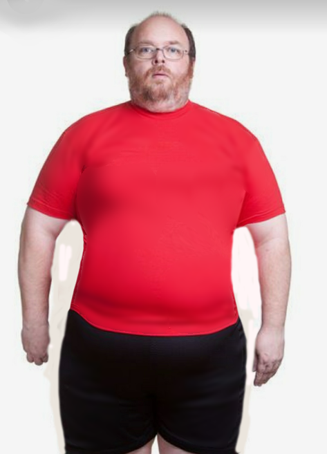
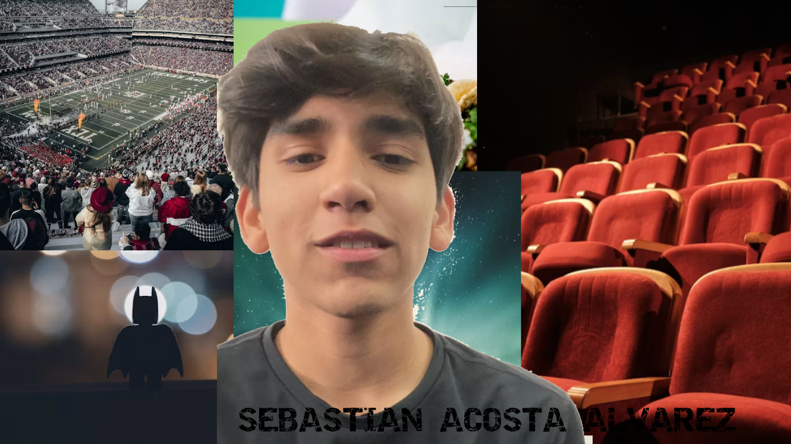
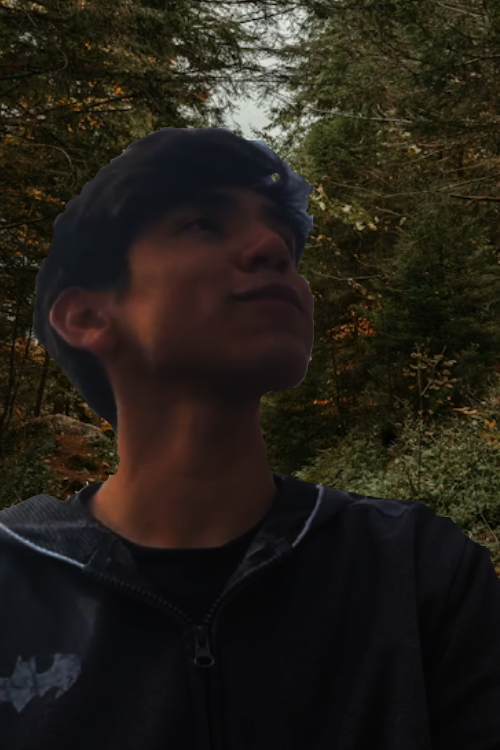

Participación 2: Conociendo Photoshop
Empecé a explorar Photoshop, conociendo su interfaz, cómo se organizan las herramientas básicas y para qué sirve cada panel principal del programa.
Práctica 6: Restauración de fotografía
Pendiente
Práctica 7: Aplicar color a Fotos Antiguas
Aprendí a darle vida y color a fotos viejas en blanco y negro usando capas de ajuste y modos de fusión especiales.
Práctica 8: Retoque de Piel
Utilicé el pincel corrector y el parche para limpiar imperfecciones en la piel, logrando que se vea limpia pero bastante natural.

Descargar PSD (.psd)Práctica 9: Estilización de Figura (Licuar)
Con el filtro Licuar modifiqué proporciones del cuerpo de forma sutil, usando máscaras para no deformar el fondo de la imagen.
Participación 3: Ética Visual
Analicé cómo se retocan las fotos profesionalmente y reflexioné sobre los límites éticos que debemos tener al modificar imágenes en publicidad.
Participación 4: Flujo de Trabajo Profesional
Entendí la diferencia entre borrar píxeles directamente y trabajar de forma segura usando máscaras de capa y objetos inteligentes en Photoshop.
Participación 5: Fotocomposición y Modos de Fusión
Pendiente

Descargar PSD (.psd)Práctica 10: Collage Surrealista / Pop Art
Hice un collage recortando mi propia foto y mezclándola con cosas que me gustan, jugando con modos de fusión y capas.

Descargar PSD (.psd)Práctica 11: Fotomontaje "Tú en un Mundo Extraño"
Creé un fotomontaje surrealista integrando mi retrato con paisajes raros, igualando las luces y colores para que se viera real.